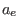
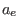
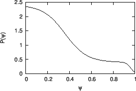

An analytic expression for the pressure profile of double (inner and external)
transport barriers is given by
where  is the normalized poloidal flux, and are the width of
the inner and external barriers, and are the locations of
the barriers, and  is the height of the barriers, is a constant
to ensure
at
is the normalized poloidal flux, and are the width of
the inner and external barriers, and are the locations of
the barriers, and  is the height of the barriers, is a constant
to ensure
at  .
.
Figure 34:
Pressure profile of double (inner and external) transport barriers
given by Eq. (523) with , ,
,
, ,
, .
|  |
Figure 35:
Equilibrium pressure profile for EAST discharge #38300 at 3.9s
(reconstructed by EFIT code, gfile name: g038300.03900), which shows a
boundary transport barrier.
|
yj
2018-03-09